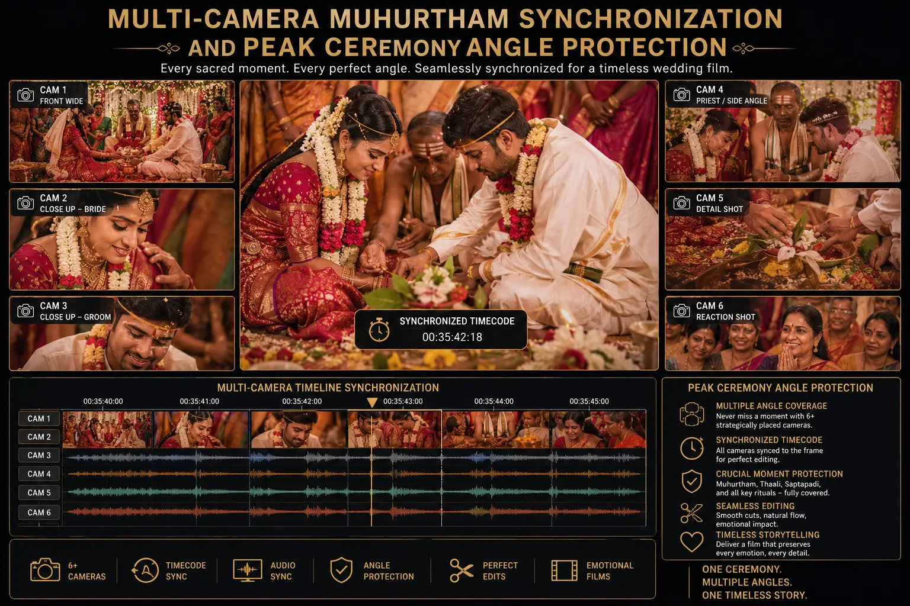
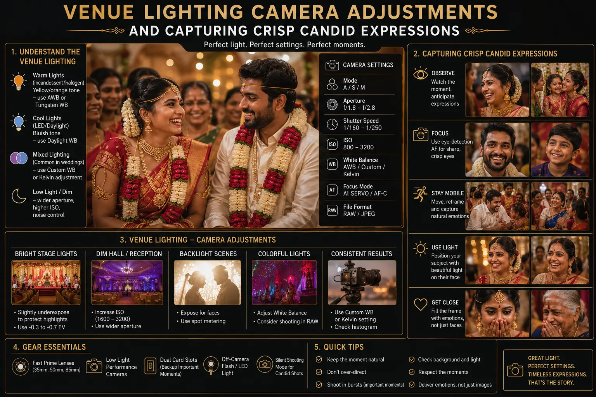

Synchronizing Multi-Camera Angles for Crucial Marriage Ceremonies
The Unrepeatable Nature of Wedding Ceremony Moments
In every South Indian wedding, there is a window — sometimes lasting only fifteen to twenty seconds — where the most sacred ritual of the entire multi-day celebration occurs. The muhurtham moment, the thali tying, the exchange of garlands, the joining of hands over the sacred fire. These moments are determined by astrological precision, performed once, and cannot be restaged, re-enacted, or repeated for the camera. If the photographer's angle was blocked by a guest's head, if the videographer's focus was on the wrong subject, if the camera's memory card was full at that exact moment — the moment is gone forever.
This is why Multi-Camera Muhurtham Synchronization is not a luxury upgrade — it is the technical foundation of professional ceremony coverage. Multiple cameras positioned at pre-assigned angles, operated by a coordinated professional camera crew near me, ensure that every critical ritual is captured from multiple perspectives simultaneously. When one angle is momentarily blocked, another angle provides complete coverage. When the primary camera captures the ritual action, secondary cameras capture the family's reaction, the priest's gestures, and the environmental context.
For families investing in elite wedding albums, the difference between single-camera and multi-camera wedding coverage is the difference between hoping the photographer captured the right moment from the right angle and knowing that every moment was comprehensively documented from every perspective. This is the standard that the Best wedding photographers near me deliver — and it requires deliberate planning, crew coordination, and technical synchronization.
Pre-Ceremony Planning: The Synchronization Blueprint
Multi-Camera Muhurtham Synchronization begins days before the ceremony — during the venue reconnaissance and pre-production planning phase:
- Venue scouting for camera positions. Visit the ceremony venue in advance and identify the optimal positions for each camera. Walk the mandapam or stage area, noting the couple's seating position, the priest's location, the fire pit or ritual altar placement, and the primary family seating areas. Identify sightline obstructions — pillars, flower arrangements, stage structures — that could block specific angles during the ceremony.
- Angle assignment and responsibility mapping. Peak Ceremony Angle Protection requires assigning each camera operator a specific angle and responsibility that they maintain during the peak ritual moments. Camera 1: frontal wide-to-medium coverage of the couple and ritual. Camera 2: profile angle capturing both faces with environmental context. Camera 3: detail and reaction coverage — tight close-ups of hands, thali, expressions, and family reactions. Each operator knows their position, their framing, and their responsibility — and commits to maintaining it during the designated peak moments.
- Lighting assessment and adaptation. Venue lighting camera adjustments must be planned based on the actual lighting conditions at the ceremony time. Morning muhurthams in open mandapams face harsh sunlight and deep shadows. Evening ceremonies in hotel ballrooms face mixed artificial lighting. Indoor temple ceremonies may have extremely low ambient light supplemented by oil lamps. Each scenario requires different camera settings — and all cameras must be adjusted to the same settings to ensure consistent output.
- Communication protocol. Establish a silent communication system — wireless earpiece radios or pre-agreed hand signals — that allows the lead photographer to coordinate the team during the ceremony without verbal instructions that would disrupt the sacred atmosphere.
Complete Coverage Guarantee
Multi-camera wedding coverage ensures that every critical ritual moment is documented from multiple perspectives — eliminating the single-point-of-failure risk that single-camera coverage carries.
Protected Peak Moments
Peak Ceremony Angle Protection pre-assigns each camera to a specific angle during the muhurtham — preventing angle duplication, sightline blocking, and coverage gaps during the most important seconds of the ceremony.
Authentic Expressions
Capturing crisp candid expressions from multiple angles simultaneously means the editor can select the frame where every subject — bride, groom, parents, priest — has the most genuine, emotionally resonant expression.
Album Excellence
Elite wedding albums are curated from thousands of frames — and multi-camera synchronization provides the breadth and depth of coverage that makes truly exceptional album curation possible.

Camera Synchronization: Technical Calibration
When multiple cameras capture the same ceremony, their output must be technically consistent — matching in colour, exposure, and timing so that images from different cameras can be placed side by side in an album or intercut in a film without visible discontinuity:
- Clock synchronization. Set all camera bodies to the exact same internal time before the ceremony. This ensures that files from different cameras are sorted chronologically in post-production, allowing the editor to find matching moments across cameras instantly. A one-minute clock discrepancy across three cameras creates chaos during album curation.
- Custom white balance calibration. All cameras must be set to the same custom white balance — measured at the venue using a grey card under the actual ceremony lighting. Auto white balance produces different results on different camera bodies, creating colour shifts between frames that are jarring when placed together in an album. Consistent manual white balance ensures colour uniformity across all cameras.
- Matched picture profiles. Set all camera bodies to identical picture profile settings — same contrast, saturation, sharpness, and dynamic range parameters. Even cameras of the same model can produce slightly different colour rendering with different profile settings, and mixing different camera brands (Canon and Sony, for example) requires careful profile matching to achieve visual consistency.
- Coordinated exposure approach. All operators should use the same metering mode and the same exposure compensation philosophy. If one camera is metering for the highlights (preserving the bright silk of the bride's saree) while another is metering for the shadows (preserving detail in the groom's dark suit), the resulting images will have inconsistent exposure that undermines the cohesive quality of elite wedding albums.
Position Architecture: The Three-Camera Ceremony Blueprint
The standard multi-camera wedding coverage architecture for South Indian ceremonies positions three cameras in complementary positions:
Camera 1: Primary Frontal
- Position: Directly in front of the couple, centred on the ritual action area, at a distance of 3-5 metres.
- Lens: 70-200mm f/2.8 zoom for flexible framing from wide establishing shots to medium close-ups without changing position.
- Responsibility: The hero camera — captures the primary frontal angle of every ritual, the couple's expressions, and the priest's actions. This camera's output forms the backbone of the album and film.
- Operator: The lead photographer — the most experienced member of the crew who anticipates moments and makes real-time framing decisions.
Camera 2: Profile / Three-Quarter
- Position: 45-60 degrees to the side, capturing both the bride's and groom's profiles with the mandapam architecture and family seating visible in the background.
- Lens: 35mm f/1.4 or 50mm f/1.2 for environmental context with shallow depth-of-field isolation of the couple.
- Responsibility: Provides the alternative perspective — the angle that shows spatial relationships, environmental context, and the ceremony within its architectural and human setting.
- Operator: A senior second shooter who understands compositional storytelling and can maintain position discipline during peak moments.
Camera 3: Details and Reactions
- Position: Mobile — moving between positions to capture tight details (hands, thali, flowers, feet, facial micro-expressions) and family reactions (parents' tears, grandparents' pride, siblings' joy).
- Lens: 85mm f/1.4 or 135mm f/1.8 for intimate close-ups from a respectful distance that does not intrude on the ceremony space.
- Responsibility: Capturing crisp candid expressions and ritual details that the primary cameras' wider framing cannot emphasise. These shots add emotional depth and narrative texture to the album.
- Operator: A detail-oriented photographer skilled at anticipating emotional reactions and moving silently through the ceremony space.
Choosing a Multi-Camera Ceremony Team
When evaluating a South Indian wedding photo studio or a professional camera crew near me for ceremony coverage, the quality of multi-camera synchronization is a critical differentiator:
- Ask how many cameras cover the muhurtham specifically. Many studios advertise "multi-camera coverage" but deploy multiple cameras only for posed group photographs — reverting to single-camera coverage during the actual ceremony. The Best wedding photographers near me deploy their full multi-camera system specifically during the peak ceremony moments.
- Request to see multi-angle coverage of a single moment. Ask the studio to show you the same muhurtham moment from two or three different angles — demonstrating that they actually operate multiple synchronised cameras during ceremonies rather than just bringing extra equipment.
- Evaluate colour consistency across cameras. Examine album spreads where images from different cameras appear on the same page — the colour temperature, exposure, and rendering should be seamlessly consistent, indicating proper venue lighting camera adjustments and camera synchronization.
- Understand the crew structure. Ask who operates each camera, how they communicate during ceremonies, and what their specific angle assignments are. A crew that cannot articulate their position and responsibility assignments is not operating with true synchronization discipline.

Conclusion
Multi-Camera Muhurtham Synchronization is the technical discipline that ensures the most sacred, unrepeatable moments of a wedding ceremony are captured completely, from every meaningful perspective. Peak Ceremony Angle Protection — pre-assigning each camera to a specific position and responsibility — eliminates the coverage gaps, angle duplication, and sightline blocking that plague uncoordinated crews.
The technical foundation — synchronised clocks, matched white balance, coordinated picture profiles, and consistent venue lighting camera adjustments — ensures that output from all cameras is visually cohesive, enabling seamless integration in elite wedding albums and cinematic ceremony films. Combined with dedicated operators skilled at capturing crisp candid expressions and ritual details, multi-camera wedding coverage delivers the comprehensive, emotionally resonant documentation that families deserve.
At The PhD Ads, our professional camera crew near me operates with full Multi-Camera Muhurtham Synchronization — coordinated positions, calibrated cameras, and Peak Ceremony Angle Protection that make us the Best wedding photographers near me for families seeking a South Indian wedding photo studio that guarantees complete ceremony coverage.
Key Topics
Complete Ceremony Coverage from Every Angle
At The PhD Ads, we synchronize multi-camera coverage for your ceremony — coordinated positions, calibrated cameras, and peak moment angle protection that captures every ritual completely.
Email: team@e2o.in